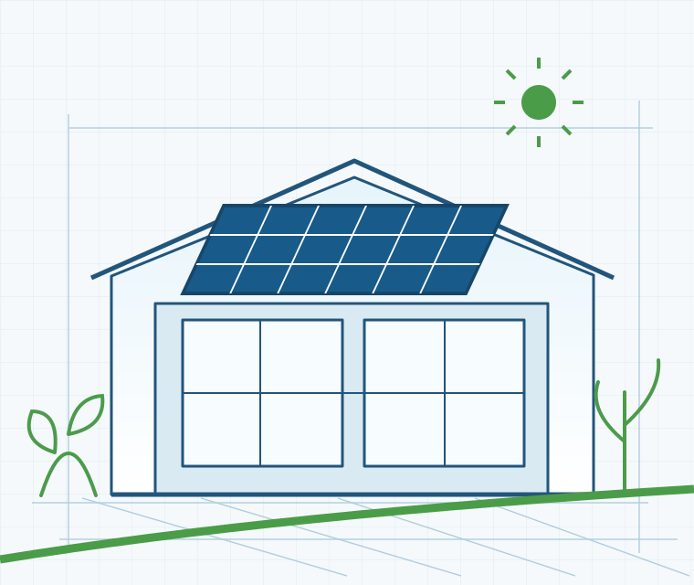

Progettazione energetica e consulenza tecnica, anche a distanza.
In tutta Italia, i servizi compatibili si svolgono esclusivamente da remoto: telefono, videochiamate e condivisione digitale dei documenti, senza visite in presenza. Le attività che richiedono sopralluoghi sono disponibili solo sul territorio.

Di cosa hai bisogno?
Partiamo dal tuo progetto.
Per i clienti fuori zona, il lavoro si svolge a distanza, senza sopralluoghi: confronto telefonico, strumenti digitali e documenti condivisi.
Un riferimento tecnico.
Vicino al tuo progetto.
Sono un ingegnere ambientale con base a Isola del Liri. Seguo progetti energetici e fotovoltaici, incentivi, pratiche edilizie e sicurezza. Per gli incarichi in tutta Italia lavoro esclusivamente a distanza, con telefono, videochiamate e strumenti digitali di condivisione dei documenti, per semplificare gli scambi e ridurre i tempi di gestione. Accetto a distanza solo attività che non richiedono verifiche fisiche.
Tutta Italia: esclusivamente da remoto · Area di Frosinone: anche in presenza
- Primo confronto
- Analisi tecnica
- Definizione dell’incarico
Parliamo del
tuo progetto.
Puoi richiedere una consulenza da tutta Italia: ci sentiamo per telefono o videochiamata e condividiamo i documenti online. Non sono previste visite in presenza per gli incarichi nazionali. Indica località e tipo di intervento: se serve un sopralluogo, ti segnalerò che il servizio non è gestibile interamente da remoto.